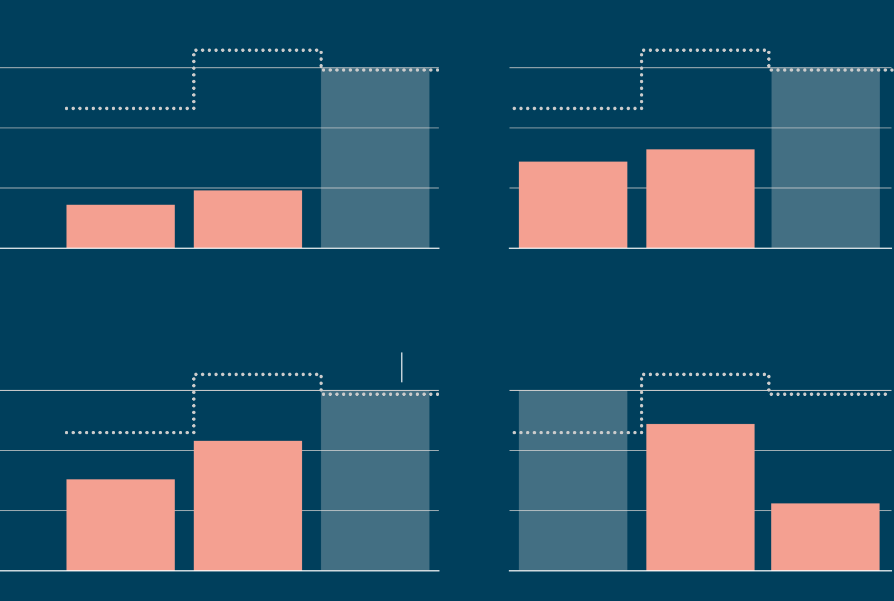

How the Makabayan bloc faltered
Militant groups belonging to the Makabayan bloc will have their
smallest contingent to the House of Representatives next Congress.
From a high of eight members in 2007, only two lawmakers from two
partylists belonging to the Makabayan group will be part of the
315-member chamber. Worse, Bayan Muna, erstwhile one of the best
performing partylists, is bound to get delisted and unable to run next
polls after losing two successive elections.
Makabayan's decline, however, did not happen overnight. Political
scientists agree that it was a result of a concerted government effort
to discredit the Left, which in turn, helped turn voters against
groups perceived to be opposing the ruling administration.
But not all was bad news for progressive candidates. In the same
election, Akbayan Citizens' Action Party topped the race with a record
number of votes, while senatorial candidates Luke Espiritu and Leody
de Guzman, both seen as progressive alternatives to candidates from
political families, gained more votes.
"It is a combination of both network and national exposure," said
Anthony Lawrence Borja, a political science professor at De La Salle
University, when asked how he would explain the difference in
performance between the Makabayan and Espiritu and de Guzman.
"Both Espiritu and De Guzman emerge into higher profiles for the past
few years. The contrary is true for most of the members of the
Makabayan bloc," he added.
Commission on Elections data showed that the four parties belonging to
the Makabayan bloc— Bayan Muna, Gabriela Women's Party, Kabataan
Partylist and ACT Teachers — got a combined votes of over 1.1 million
last elections, equivalent to just 3% share of total partylist votes.
It was their weakest performance since their original members, Bayan
Muna and Gabriela, joined the elections in 2001 and 2004,
respectively. Votes for both partylists were not sufficient to secure
them a seat next Congress, with Bayan Muna at risk of getting
permanently barred from running after losing its second consecutive
polls.
Votes for the Makabayan bloc have consistently declined since 2016

2010 had a record-high number of partylists at 187. ACT
Teachers joined the Makabayan bloc.
Note: Latest data for 2025 based on official tally of votes from the
Commission on Elections with 99.12% of precincts reporting.
For Sonny Africa, executive director of IBON Foundation, a
left-leaning think tank, Makabayan's losses all boil down to the
government's "systematic, widespread and long running attacks" against
the Left. These attacks, he said, transcended administrations and came
in various forms, including killings of members on the ground and
online, associating the Makabayan with communist insurgents, which the
group has repeatedly denied.
It was not like this two decades ago. It was the very opposition to
the administrations of Joseph Estrada and Gloria Macapagal-Arroyo that
catapulted the Makabayan parties, already long existing, to public
view. They protested Estrada during his impeachment trial, and helped
make Arroyo the most unpopular Philippine leader since democracy was
restored in 1986.
After getting formally established in 2009, the Makabayan even tried
to expand their footprint in the House by adding new partylists to its
wing in the succeeding elections.
Other Makabayan-aligned partylists have failed to enter Congress
Only Ang Nars partylist gained a seat at the House of
Representatives in 2013. They lost that seat in 2016 and 2019 before
getting delisted.

Lowest share of votes earned by partylist with a Congress seat

Lowest share of votes earned by partylist with a Congress seat
Source: Commission on Elections
But Arjan Aguirre, a political scientist at Ateneo de Manila
University, said the government's crackdown against the group and
their ideology eventually caught up with the Makabayan. As more
Filipinos became aware of their "radical left's ideological leanings,"
Aguirre said, more also turned their backs on them.
"Most Filipinos are anti-communist and anti-insurgency, and this is
reflected in the votes provided to the likes of [Rodante] Marcoleta,
[Panfilo] Lacson, [Ronald] de la Rosa, and [Tito] Sotto," Borja said.
To be clear, none of this is illegal: the Marcos Sr.-era
Anti-Subversion Act, which penalizes communist membership, has long
been repealed. Duterte himself allied with the Makabayan at the outset
of his presidency. With Duterte so popular however, the falling out
ended harshly for the Makabayan. "Duterte institutionalized the
vilification of activists and normalized spuriously linking them with
armed insurgency and terrorism," Africa said.
In contrast, Espiritu and De Guzman did not have to endure the same
government attacks. Top performer Akbayan, meanwhile, largely
benefited from voter awareness of Senator Risa Hontiveros leading to
the elections, Borja said.
In the Senate race, Espiritu and De Guzman, who political analysts
consider as moderate left, also did not win, but they attracted more
votes this year compared with their previous run. They also have more
votes than Makabayan personalities who ran for senator such as
Gabriela's Liza Maza and ACT Teachers France Castro, who led the House
investigation on Vice President Sara Duterte's alleged public fund
misuse.
Espiritu and De Guzman gain some ground on Senate ambitions
Number of votes received in their respective Senate runs
39% of partylists
did not run in 2013

39% of partylists did not run in 2013
39% of partylists did not run in 2013
53% of partylists did not run in 2013
31% of partylists did not run in 2013
Note: Some partylists changed names throughout the years. On years
when the renamed partylists ran for office, they were not counted as
new partylists. Only parties were considered in counting, not their
nominees.
Source: Author's analysis of Commission on Elections
data
"Their group…is composed by more diverse figures, of labor union
leaders, millennial organizers, Gen-Z sympathizers, etc. Their
leadership…is also diverse making it more relatable and appealing to
other sectors other than their own labor sector," Aguirre explained of
Espiritu and De Guzman.
Bayan Muna and Gabriela did not respond to requests for comment. In
earlier reports however, Makabayan has said the partylist system has
been populated by groups not really giving representation to
marginalized sectors in Congress, as envisioned by law. The ballooning
number of partylists, they said, has disadvantaged them.
Since the Supreme Court ruling that broadened the partylist system in
2013, about one in three partylists in succeeding elections were new
candidates, meaning they did not run in previous polls before the
ruling, Data Dictionary analysis of Comelec data showed. In 2022 under
Duterte, that number rose to one in two partylists.
A crowded field
Since the Supreme Court ruled in 2013 that partylist groups need not
be from the marginalized sector, the share of new partylists has
ballooned from over one in three in 2016 to over half in 2022. The
share declined to 30% in 2025.
39% of partylists
did not run in 2013
39% of partylists did not run in 2013
39% of partylists did not run in 2013
53% of partylists did not run in 2013
31% of partylists did not run in 2013
Note: Some partylists changed names throughout the years. On years
when the renamed partylists ran for office, they were not counted as
new partylists. Only parties were considered in counting, not their
nominees.
Source: Author's analysis of Commission on Elections
data
How Makabayan parties that lost could recover would depend on
Source:
Commission on Elections
Copyright 2025 - The
Data Dictionary
Project